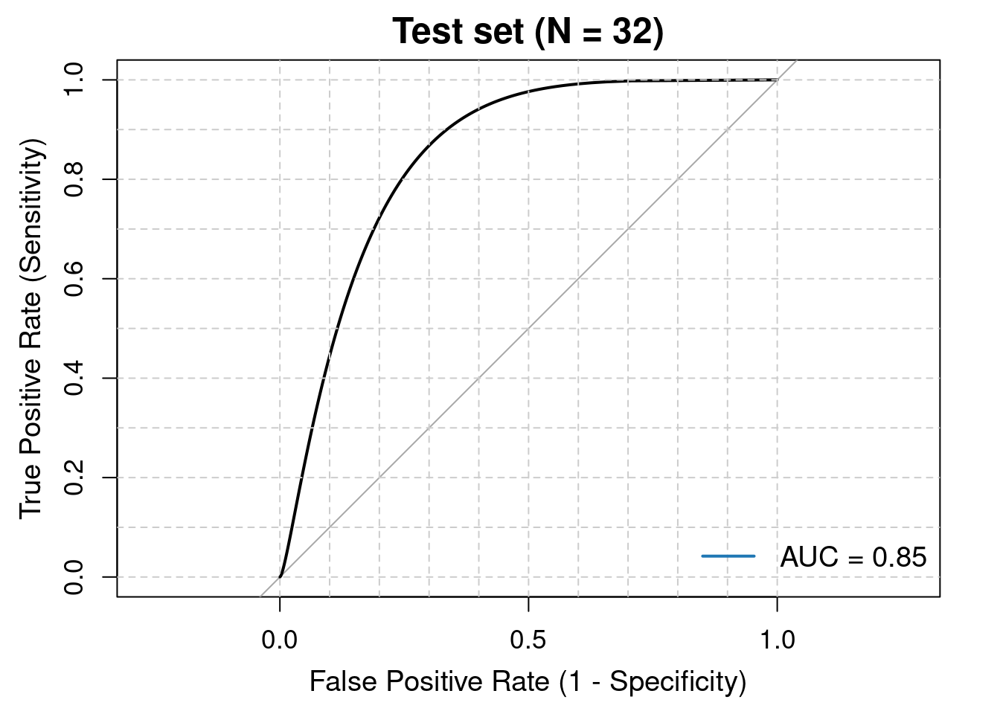
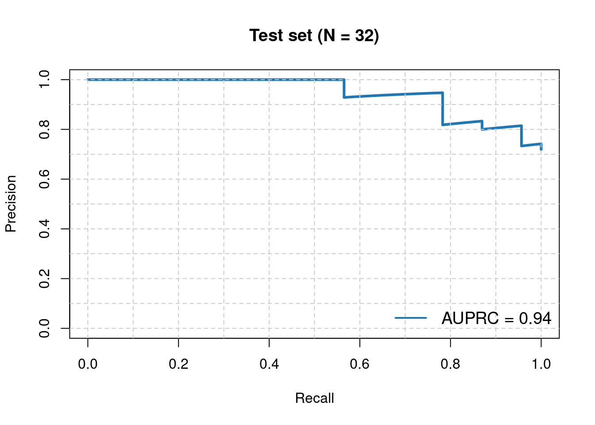
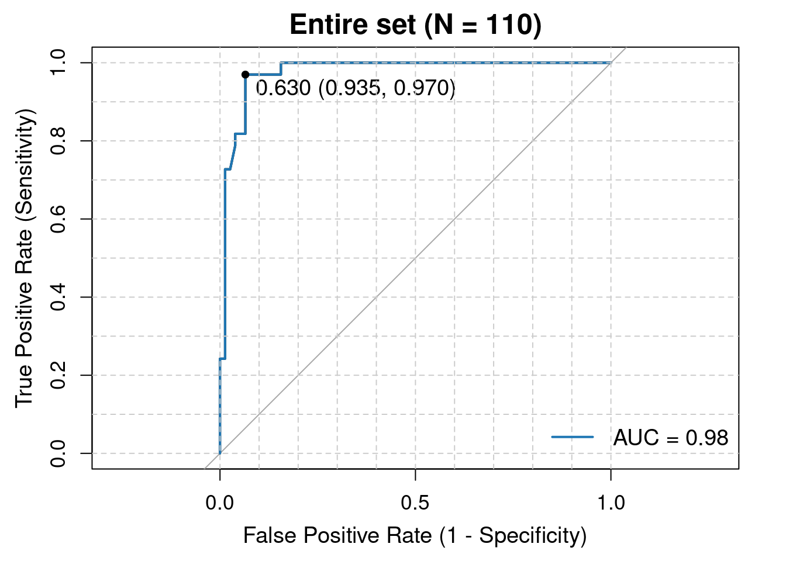
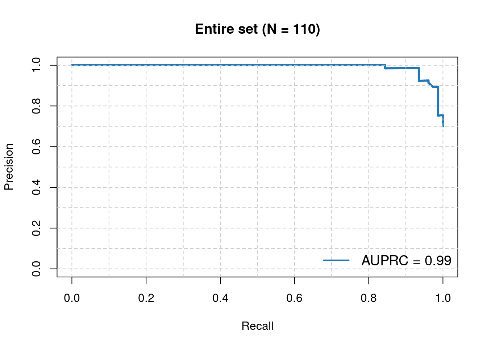

4.2 Predict Class Labels on the Test Set and Plot ROC
#########################################################
## Predict Class Labels on the Test Set and Plot ROC
#########################################################
library(pROC)
library(PRROC)
rf_tuned <- readRDS("../03.out/figure3/AZA_VEN_RandomForest8.rds")
data <- read_excel("../02.data/TrainingTest_RJAML_Cohort1_84_genes.xlsx")
data <- data[, -1]
data$Response <- as.factor(data$Response)
set.seed(12345)
trainIndex <- createDataPartition(data$Response, p = 0.7, list = FALSE)
trainData <- data[trainIndex, ]
testData <- data[-trainIndex, ]
# Predict class labels and probabilities on the test set
test_predictions <- predict(rf_tuned, newdata = testData)
test_probabilities <- predict(rf_tuned, newdata = testData, type = "prob")
# Generate confusion matrix
confusionMatrix(test_predictions, testData$Response)## Confusion Matrix and Statistics
##
## Reference
## Prediction CR NonCR
## CR 3 1
## NonCR 20 8
##
## Accuracy : 0.3438
## 95% CI : (0.1857, 0.5319)
## No Information Rate : 0.7188
## P-Value [Acc > NIR] : 1
##
## Kappa : 0.0118
##
## Mcnemar's Test P-Value : 8.568e-05
##
## Sensitivity : 0.13043
## Specificity : 0.88889
## Pos Pred Value : 0.75000
## Neg Pred Value : 0.28571
## Prevalence : 0.71875
## Detection Rate : 0.09375
## Detection Prevalence : 0.12500
## Balanced Accuracy : 0.50966
##
## 'Positive' Class : CR
## # Add predicted probabilities for CR
testData$RF8.prob.CR <- test_probabilities[, "CR"]
# write.csv(testData, "../03.out/figure3/RF8_RJAML_cohort1_test.csv")
testData <- read.csv("../03.out/figure3/RF8_RJAML_cohort1_test.csv", header = T)
# Plot ROC curve for the test set
roc_obj <- roc(testData$Response, testData$RF8.prob.CR)
# Save ROC plot to PDF
p1 <- plot(smooth(roc_obj), legacy.axes = TRUE, lwd = 2,
main = "Test set (N = 32)",
xlab = "False Positive Rate (1 - Specificity)",
ylab = "True Positive Rate (Sensitivity)",
cex.main = 1.5, cex.lab = 1.2, cex.axis = 1.1)
abline(h = seq(0, 1, by = 0.1), v = seq(0, 1, by = 0.1), col = "gray80", lty = 2)
legend("bottomright", legend = c(paste("AUC =", round(roc_obj$auc, 2))),
col = "#1f77b4", lwd = 2, bty = "n", cex = 1.2)
print(p1)##
## Call:
## smooth.roc(roc = roc_obj)
##
## Data: testData$RF8.prob.CR in 23 controls (testData$Response CR) > 9 cases (testData$Response NonCR).
## Smoothing: binormal
## Area under the curve: 0.8475# Compute Precision-Recall curve and AUPRC for the test set
testData$Response <- factor(testData$Response, levels = c("NonCR", "CR"))
response_binary <- as.numeric(testData$Response) - 1
pr_curve <- pr.curve(scores.class0 = testData$RF8.prob.CR, weights.class0 = response_binary, curve = TRUE)
p2 <- plot(pr_curve, main = "Test set (N = 32)", color = "#1f77b4", auc.main = FALSE)
abline(h = seq(0, 1, by = 0.1), v = seq(0, 1, by = 0.1), col = "gray80", lty = 2)
legend("bottomright", legend = c(paste("AUPRC =", round(pr_curve$auc.integral, 2))),
col = "#1f77b4", lwd = 2, bty = "n", cex = 1.2)
print(p2)## NULL# #########################################################
# ## Predict Class Labels on the Training Set and Plot ROC
# #########################################################
#
# # Predict class labels and probabilities on the training set
# train_predictions <- predict(rf_tuned, newdata = trainData)
# train_probabilities <- predict(rf_tuned, newdata = trainData, type = "prob")
#
# # Generate confusion matrix
# confusionMatrix(train_predictions, trainData$Response)
#
# # Add predicted probabilities for CR
# trainData$RF8.prob.CR <- train_probabilities[, "CR"]
#
# # Plot ROC curve for the training set
# roc_obj_train <- roc(trainData$Response, trainData$RF8.prob.CR)
# roc_obj_train$auc
#
# # Save ROC plot to PDF
# pdf("figure3/RF8_Training_ROC.pdf", width = 4.2, height = 4)
# plot(roc_obj_train, legacy.axes = TRUE, lwd = 2,
# main = "Training set (N = 78)",
# xlab = "False Positive Rate (1 - Specificity)",
# ylab = "True Positive Rate (Sensitivity)",
# cex.main = 1.5, cex.lab = 1.2, cex.axis = 1.1)
# abline(h = seq(0, 1, by = 0.1), v = seq(0, 1, by = 0.1), col = "gray80", lty = 2)
# legend("bottomright", legend = c(paste("AUC =", round(roc_obj_train$auc, 2))),
# col = "#1f77b4", lwd = 2, bty = "n", cex = 1.2)
# dev.off()
#########################################################
## Predict Class Labels on the Entire Dataset and Plot ROC
#########################################################
# # Predict class labels and probabilities on the entire set
# entire_predictions <- predict(rf_tuned, newdata = data_selected)
# entire_probabilities <- predict(rf_tuned, newdata = data_selected, type = "prob")
#
# # Generate confusion matrix
# confusionMatrix(entire_predictions, data_selected$Response)
#
# # Add predicted probabilities and class labels
# data_selected$RF8.prob.CR <- entire_probabilities[, "CR"]
# data_selected$Predicted_Response <- entire_predictions
# write.csv(data_selected, "../03.out/figure3/RF8_RJAML_cohort1_entire.csv")
# Plot ROC curve for the entire dataset
data_selected <- read.csv("../03.out/figure3/RF8_RJAML_cohort1_entire.csv", header = T)
roc_obj_entire <- roc(data_selected$Response, data_selected$RF8.prob.CR)
roc_obj_entire$auc## Area under the curve: 0.976# Save ROC plot to PDF
p3 <- plot(roc_obj_entire, legacy.axes = TRUE, lwd = 2,
main = "Entire set (N = 110)",
xlab = "False Positive Rate (1 - Specificity)",
ylab = "True Positive Rate (Sensitivity)",
cex.main = 1.5, cex.lab = 1.2, cex.axis = 1.1)
print(p3)##
## Call:
## roc.default(response = data_selected$Response, predictor = data_selected$RF8.prob.CR)
##
## Data: data_selected$RF8.prob.CR in 77 controls (data_selected$Response CR) > 33 cases (data_selected$Response NonCR).
## Area under the curve: 0.976p4 <- plot(roc_obj_entire, print.thres = "best", col = "#1f77b4", print.thres.cex = 1.2, add = TRUE)
abline(h = seq(0, 1, by = 0.1), v = seq(0, 1, by = 0.1), col = "gray80", lty = 2)
legend("bottomright", legend = c(paste("AUC =", round(roc_obj_entire$auc, 2))),
col = "#1f77b4", lwd = 2, bty = "n", cex = 1.2)
print(p4)##
## Call:
## roc.default(response = data_selected$Response, predictor = data_selected$RF8.prob.CR)
##
## Data: data_selected$RF8.prob.CR in 77 controls (data_selected$Response CR) > 33 cases (data_selected$Response NonCR).
## Area under the curve: 0.976# Compute Precision-Recall curve and AUPRC for the entire dataset
data_selected$Response <- factor(data_selected$Response, levels = c("NonCR", "CR"))
response_binary_entire <- as.numeric(data_selected$Response) - 1
pr_curve_entire <- pr.curve(scores.class0 = data_selected$RF8.prob.CR, weights.class0 = response_binary_entire, curve = TRUE)
p5 <- plot(pr_curve_entire, main = "Entire set (N = 110)", color = "#1f77b4", auc.main = FALSE)
abline(h = seq(0, 1, by = 0.1), v = seq(0, 1, by = 0.1), col = "gray80", lty = 2)
legend("bottomright", legend = c(paste("AUPRC =", round(pr_curve_entire$auc.integral, 2))),
col = "#1f77b4", lwd = 2, bty = "n", cex = 1.2)
print(p5)## NULL